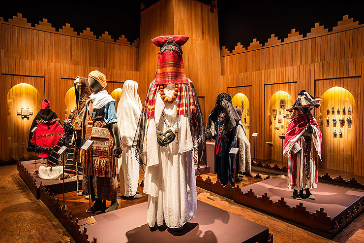

Jardin Majorelle!
Presentation
Le jardin Majorelle est l’un des endroits à voir à Marrakech. C’est surement l’une des visites les plus populaires de la célèbre ville du sud du Maroc. Un magnifique havre de paix au coeur de la trépidante ville rouge. Dans ce billet consacré à la visite du jardin Majorelle de Marrakech, je partage mon retour d’expérience sur ce jardin que j’ai visité à deux reprises. J’évoquerai également quelques informations pratiques, notamment le prix du ticket ou encore les horaires d’ouverture. J’indiquerai également pourquoi je recommande de faire une réservation de son billet pour le jardin Majorelle. Un coupe-file est non négligeable car c’est l’un des rares sites touristiques de Marrakech où la file d’attente est impressionnante …

Le musée berbère de Marrakech
Au sein du jardin Majorelle se trouve le musée berbère de Marrakech. Un supplément est à payer sur place si vous souhaitez également le visiter. Il n’est pas inclus dans le billet du jardin Majorelle, qu’il soit réservé en ligne ou acheté sur place. Le nom complet du musée est en réalité éco-musée berbère de la vallée de l’Ourika (vallée qui se situe au sud de Marrakech ). Ce musée ethnologique est assez petit, prévoir 20 minutes de visite, pas forcément plus. Et les photographies y sont interdites. Même si tous les visiteurs du jardin Majorelle ne visitent pas le musée berbère, il peut y avoir pas mal de monde. Cette impression provient notamment du fait que le musée est assez petit. Le musée permet d’en savoir plus sur la culture et les traditions berbères. Vous pouvez notamment y voir des bijoux, vêtements et autres objets berbères.
Autres endroits
Au- delà du jardin botanique et du musée berbère, on trouve également dans son enceinte :
• café Majorelle qui est ouvert aux mêmes heures et donc sur l’ensemble de la plage horaire de visite. A noter, le café n’est accessible qu’aux détenteurs d’un billet d’entrée pour la visite
• boutique du jardin (+ celle du musée)
• galerie où sont exposées des affiches d’Yves Saint Laurent
Tous ces endroits sont accessibles avec le seul billet du jardin Majorelle. Seul le musée berbère nécessite un ticket séparé à acheter sur place.